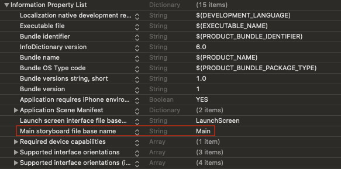
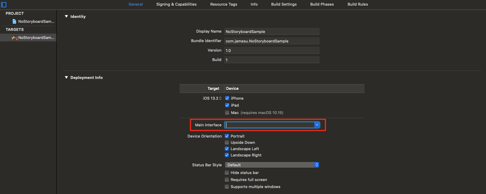
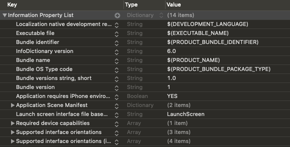
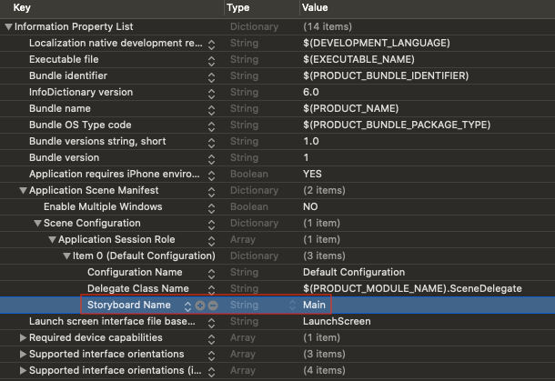
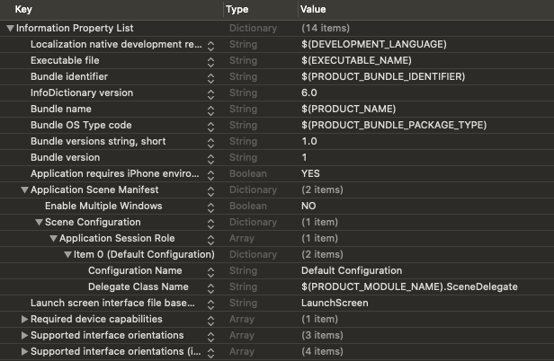
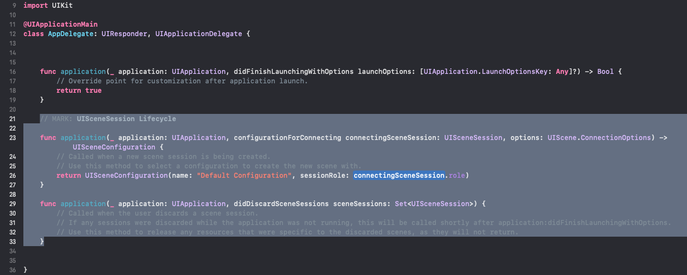
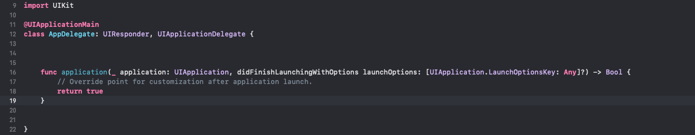
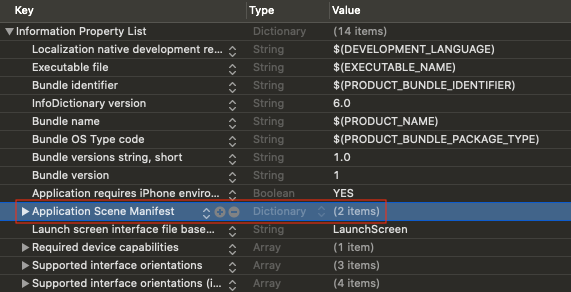
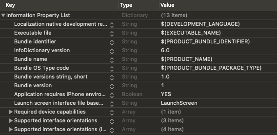

Xcode 11에서 스토리보드와 SceneDelegate 없이 Swift 프로젝트 시작하기
개요
뷰를 구성하는 방법은 Code, Storyboard, NIB(XIB) 등 외에 최근에 추가된 SwiftUI까지 다양한 방법이 존재한다. 각 방법은 장단점이 존재해 어떤 것이 Best Practice라고 단정하기 어렵다. 프로젝트 상황에 맞춰 장단점을 고려해 적절히 선택해야 한다.
여기서는 그 중에 Code 기반 프로젝트를 시작하기 위해, Xcode에서 프로젝트를 생성하면 기본적으로 추가되는 스토리보드를 제거하는 방법을 알려준다.
추가적으로 Xcode 11에서 새 프로젝트를 생성한다면, 처음 보는 SceneDelegate.swift 파일이 생겼을 것이다.
이는 iOS 13을 위해 새로 생긴 UIWindowSceneDelegate 프로토콜을 구현한 클래스로, Scene 개념을 적용할 수 있게 해준다.
만약, 이전 버전처럼 Scene 개념을 적용할 필요가 없다면 굳이 필요하지 않은 부분이므로, SceneDelegate를 제거하는 방법까지 알아보도록 하자.
Scene 개념에 대해 더 자세히 알아보고 싶다면, 다음 링크들을 참고하길 바란다.
스토리보드 제거
스토리보드를 제거하기 위해선 프로젝트가 생성되면서 Main.storyboard와 연동된 부분을 끊으면 된다.
1. 프로젝트에서 Main 스토리보드 설정을 제거한다. 이때, 프로젝트 설정을 이용하면 편리하다.
  
위와 같이 프로젝트 설정에서 Main Interface 항목의 Main 값을 지우면, Info.plist에도 반영된다.
만약, Info.plist에 Main storyboard file base name 항목이 남아있다면, 제거하도록 한다.
2. Xcode 11의 경우, Info.plist의 Scene 관련 항목에서 Storyboard Name 항목을 제거한다.
 
3. Main.storyboard 파일을 삭제한다.
해당 파일은 더 이상 사용하지 않으므로 삭제하도록 한다.
4. ViewController의 기본 뷰에 배경색을 입히고 SceneDelegate에 연동한 후, 앱을 실행시켜 적용한 배경색이 잘 뜨는지 확인한다.
class ViewController: UIViewController {
override func viewDidLoad() {
super.viewDidLoad()
view.backgroundColor = .red
}
}class SceneDelegate: UIResponder, UIWindowSceneDelegate {
var window: UIWindow?
func scene(_ scene: UIScene, willConnectTo session: UISceneSession, options connectionOptions: UIScene.ConnectionOptions) {
guard let windowScene = (scene as? UIWindowScene) else { return }
window = UIWindow(windowScene: windowScene)
window?.rootViewController = ViewController()
window?.makeKeyAndVisible()
}
...
}앱이 실행되면, 빨간색 배경이 보이는 것을 확인할 수 있다.
SceneDelegate 제거
기존에 SceneDelegate에서 UIWindow를 설정하는 부분을 예전처럼 AppDelegate로 옮기고, Scene 관련 파일과 설정을 제거하면 된다.
1. AppDelegate에서 Scene 관련 함수 정의부를 제거한다.
 
2. AppDelegate에 UIWindow 설정 로직을 추가한다.
@UIApplicationMain
class AppDelegate: UIResponder, UIApplicationDelegate {
var window: UIWindow?
func application(_ application: UIApplication, didFinishLaunchingWithOptions launchOptions: [UIApplication.LaunchOptionsKey: Any]?) -> Bool {
window = UIWindow()
window?.rootViewController = ViewController()
window?.makeKeyAndVisible()
return true
}
}3. SceneDelegate.swift 파일을 삭제한다.
해당 파일은 더 이상 사용하지 않으므로 삭제하도록 한다.
4. Info.plist에서 Application Scene Manifest 항목을 통째로 제거한다.
 
5. 앱을 실행시켜 앞서 적용한 배경색이 잘 뜨는지 확인한다.
앱이 실행되고 빨간색 배경이 보이면, 잘 적용된 것이다. 🙂